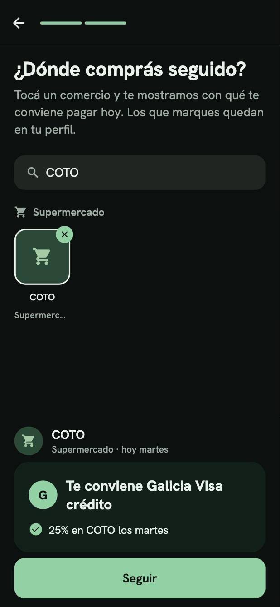
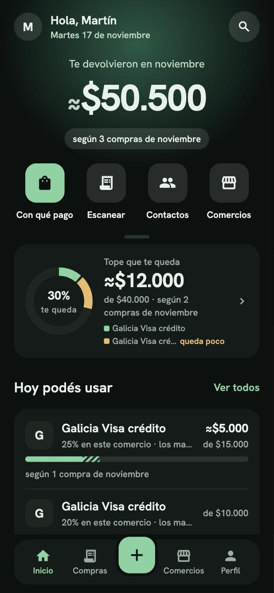
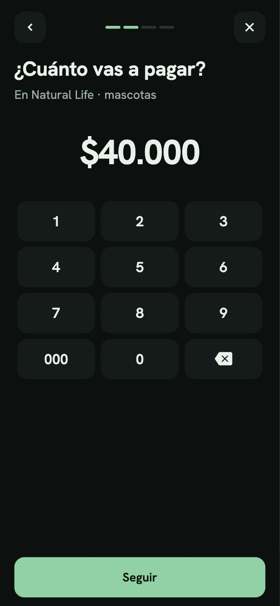
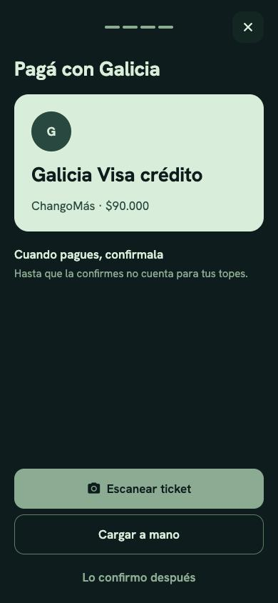
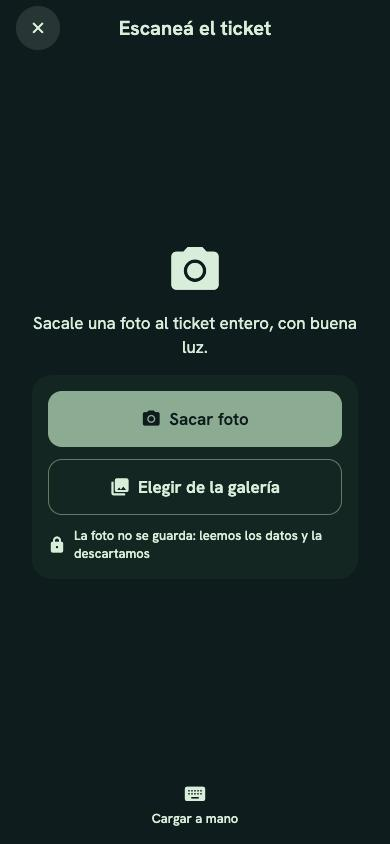
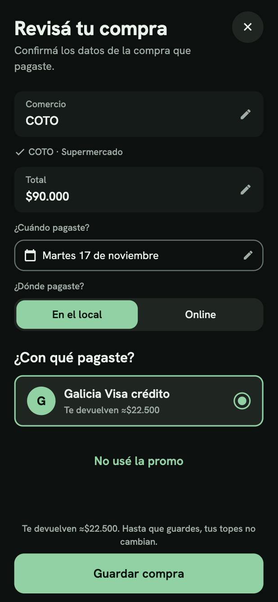
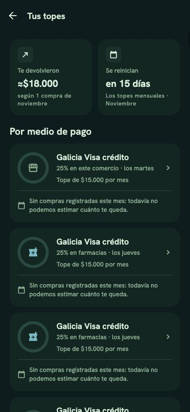
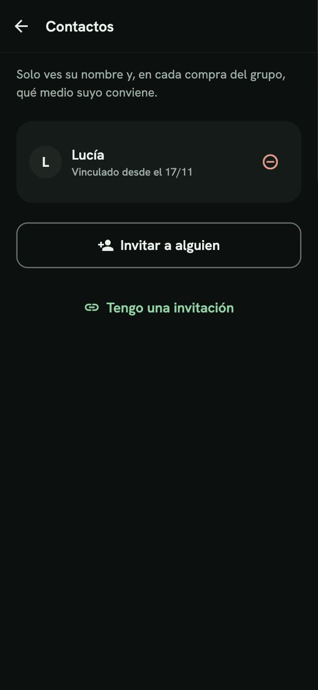
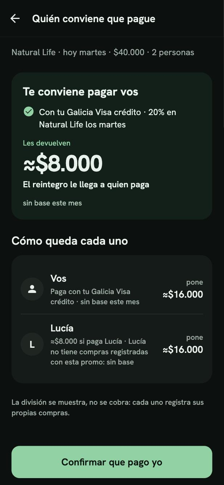

Se prueba antes de crear la cuenta
- 1Bienvenida
Sin cuenta, sin conectar el banco.
- 2Primera respuesta
Elegís un comercio y ves con qué pagar hoy. La cuenta viene al final.


Una compra, una recomendación
- 1Inicio
Lo devuelto este mes y el tope que queda.
- 2Comprar
Elegís dónde estás comprando.
- 3Monto
Cuánto vas a pagar.
- 4Recomendación
Al 25% le queda poco tope: conviene el 20%. Se calcula en el celular, sin red.
- 5Voy a pagar
Queda por confirmar; no cuenta en tus topes hasta entonces.





La foto del ticket mantiene el tope al día
- 1Escanear el ticket
La foto no se guarda: se lee y se descarta.
- 2Revisá tu compra
Comercio, monto y medio. Lo confirma el usuario.
- 3Tus compras
Lo registrado en el mes.
- 4Tus topes
Estimado, con las compras en que se basa.




Entre varios: quién conviene que pague
- 1Contactos
Solo se ve el nombre y qué medio conviene.
- 2Invitar
QR o link, una sola vez. No se comparten compras ni tarjetas.
- 3Armar el grupo
Contactos vinculados y gente sin cuenta.
- 4Resultado
Quién paga y cuánto pone cada uno. Lo calcula una función del servidor con el mismo motor.



